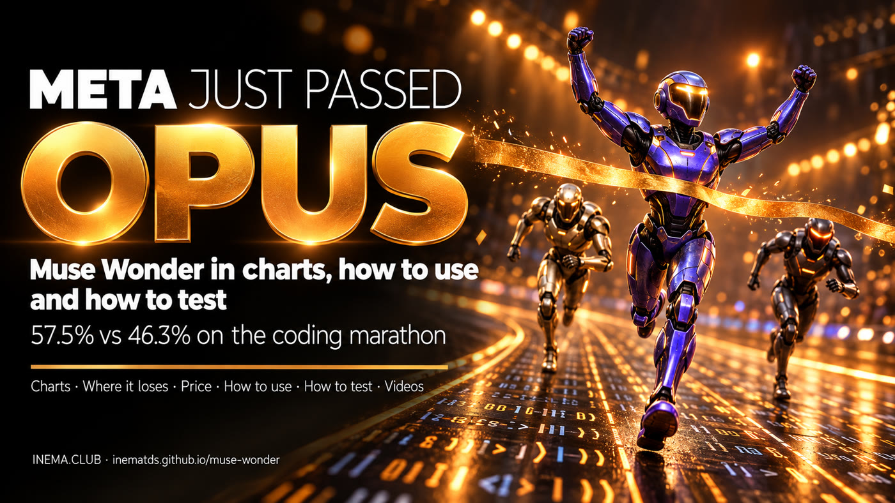

Muse Wonder and Wonder Full in comparison charts: where they win, where they lose, how to use them and how to test them on your project.

On October 12, 2026, Meta released two artificial intelligence models, Muse Wonder and Muse Wonder Full, built to work on their own for a long time on programming and office tasks. This guide gathers the numbers we checked in official and independent sources, shows where they win and where they lose against Claude Opus 5.5 and GPT-6 Astra, and teaches you to use and test them yourself. It is for people who code with agents and want to decide with their own evidence, not with the chart of whoever is selling. To read it, you do not need to install anything.
Both read 1,048,576 tokens of context, accept text, image, video, audio and PDF, and reply in text only.
It is on the Meta API (muse-wonder-1.0, in Preview), in Muse Code and on OpenRouter. It costs US$ 4 per million input tokens and US$ 20 output, the same as Opus 5.5.
The stronger version. It has no API: it only runs in Muse Code, Meta's terminal agent, on the Power (US$ 50/month) and Maximum (US$ 200/month) plans.
Long, autonomous work: multi-file programming, agents, computer use, law and finance. The older Muse Spark was the fast, compact one.
Bars scaled from zero. In amber, the Meta model. Each chart lists its source; "Meta" means Meta's own official table (self-reported).
Source: Meta, dev.meta.ai/models/muse-wonder. Full was measured at xhigh, and each model ran in its own harness.
Source: Meta (third-party numbers: Datacurve, OpenAI and Anthropic).
Source: Artificial Analysis, Oct 12, 2026 (independent evaluation).
Source: Artificial Analysis. Full ties with Claude Code + Sonnet; it beats Opus by 2 points.
Source: Meta. Index created by Meta itself (7 personal and office tasks): read with caution.
Source: Meta and Vals.ai. On Vals' overall index Full came in 5th, with 64.57%.
By Meta's own table and by Artificial Analysis, there are areas where Opus and Astra stay ahead.
Source: Meta.
Source: Meta. Full rose from 33% (Spark 1.3) to 57%, but still trails.
Source: Artificial Analysis (6,000 questions).
Source: Artificial Analysis. The rate for Opus and Astra does not appear in the AA text (only in an image chart), so it was left out.
Wonder reads a lot: 7.69 million input tokens per task, which is 76% of the cost. That is why Astra, Argon and GPT-6.1 come out cheaper per task.
Source: Artificial Analysis. Full has no per-token price, so it is not included.
| Model | Input | Output |
|---|---|---|
| Muse Wonder | US$ 4 | US$ 20 |
| Claude Opus 5.5 | US$ 4 | US$ 20 |
| GPT-6 Astra / Fable 5.1 | US$ 10 | US$ 50 |
| Muse Spark 1.3 | US$ 1.25 | US$ 4.25 |
Wonder input cache: US$ 0.20. No surcharge for long context. Full: only through the Muse Code subscription (Power US$ 50, Maximum US$ 200 per month).
Wonder runs through the API (pay per use) and in Muse Code. Full only in Muse Code, with a Power or Maximum subscription. Paying for the subscription does not give API access to Full.
Go to dev.meta.ai, create the developer account and generate a key. Keep it in an environment variable, never in the code.
export MODEL_API_KEY="your-key" curl -s https://api.meta.ai/v1/models -H "Authorization: Bearer $MODEL_API_KEY" # checks that muse-wonder-1.0 shows up
The Chat Completions endpoint is compatible with the OpenAI format: change the base_url and the model name. For long tasks with tools, Meta recommends the Responses API (POST /v1/responses).
import os from openai import OpenAI client = OpenAI(base_url="https://api.meta.ai/v1", api_key=os.environ["MODEL_API_KEY"]) r = client.chat.completions.create( model="muse-wonder-1.0", reasoning_effort="high", # ranges from "minimal" to "max"; "max" does NOT turn it into Full messages=[{"role": "user", "content": "Explain what this repository does."}], ) print(r.choices[0].message.content)
Wonder is on OpenRouter as meta/muse-wonder, at the same price (US$ 4 / US$ 20) and 1M of context. Full is not there.
client = OpenAI(base_url="https://openrouter.ai/api/v1", api_key=os.environ["OPENROUTER_API_KEY"]) client.chat.completions.create(model="meta/muse-wonder", messages=[...])
It is the path to Wonder Full. Run it in the project folder, trust the folder and log in through the browser or with the key. The plans are at dev.meta.ai/docs/muse-code/subscriptions.
curl -fsSL https://dev.meta.ai/install.sh | sh # Linux and macOS irm https://dev.meta.ai/install.ps1 | iex # Windows (PowerShell) muse --version cd my-project && muse # pick the Wonder model in the session muse exec "run the tests and fix what fails" # headless (CI), with META_API_KEY
A benchmark is an average of other people's tasks. To decide, compare on your own codebase, under the same conditions. Define beforehand what you will compare: Wonder × Opus via API (same price) or Muse Code + Full × Claude Code + Opus (subscription × subscription).
A bug with a failing test, a medium feature, a multi-file refactor and, if you can, a long task (hours). Without a test there is no way to say who got it right.
Same commit, a clean copy for each agent, the same request, and the verification tests out of its reach.
git worktree add ../teste-wonder <commit> git worktree add ../teste-opus <commit> # same request file in both; same rules (equivalent AGENTS.md / CLAUDE.md)
Same reasoning level, same time limit, same tools and permissions. The result varies from one run to another; three runs give an honest average.
Wall-clock time, cost (input, cache and output tokens × price) and passing tests, including the whole suite to catch regressions. Also note how many times you had to step in.
| Task | Agent | Run | Time | Cost | Tests | Regression | Interventions |
|---|---|---|---|---|---|---|---|
| bug-login | Wonder | 1 | 12 min | US$ 0.80 | 14/14 | no | 0 |
| bug-login | Opus 5.5 | 1 | … | … | … | … | … |
Example row, only to show the spreadsheet format.
Ask someone else (or a third model) to judge the quality without knowing who did it. Compare success rate, cost per solved task and time. Remember: Wonder is strong on long tasks and weak on pure knowledge.
Terminal-Bench (tasks in containers), SWE-bench Verified/Pro (local with Docker), ProgramBench (with mini-swe-agent) and OSWorld (computer use). Look up each one's official page for instructions. The Personal Superintelligence Index and MemoryBench are Meta-internal and cannot be run.
The 16:9 explainer with all the animated charts and the 9:16 reel in the 7-step model.
Research done on Oct 14, 2026. When two sources disagree, the chart says which one was used.